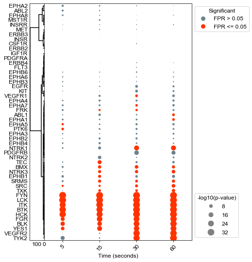
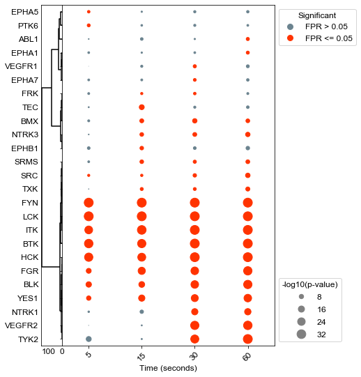

TCR Activation (Chylek, 2014)
[1]:
#Supporting packages for analysis
import numpy as np
import pandas as pd
#KSTAR imports
from kstar import config, helpers, calculate
from kstar.plot import DotPlot
#Set matplotlib defaults for arial 12 point font
from matplotlib import rcParams
rcParams['font.family'] = 'sans-serif'
rcParams['font.sans-serif'] = ['Arial']
rcParams['font.size'] = 12
import matplotlib.pyplot as plt
#where supplementary data was downloaded to (From https://figshare.com/articles/dataset/KSTAR_Supplementary_Data/14919726)
SUPPLEMENTS_DIR = './'
#Directory where KSTAR Supplemental data was set
odir = SUPPLEMENTS_DIR+'Supplements/SupplementaryData/Control_Experiments/TCR_Chylek_2014/'
#load the Mann Whitney activities and FPR for Tyrosine predictions,
#it will be faster and less data than loading all KSTAR outputs
activities = pd.read_csv(odir+'/RESULTS/TCR_Y_mann_whitney_activities.tsv', sep='\t', index_col=0)
fpr = pd.read_csv(odir+'/RESULTS/TCR_Y_mann_whitney_fpr.tsv', sep='\t', index_col=0)
#load kinase map from supplementary data
KINASE_MAP = pd.read_csv(SUPPLEMENTS_DIR+'SupplementaryData/Map/globalKinaseMap.csv', index_col = 0)
#set preferred kinase names from the kinase map (make a kinase_dict)
kinase_dict = {}
for kinase in activities.index:
kinase_dict[kinase] = KINASE_MAP.loc[kinase,'Preferred Name']
Agglomerative clustering of kinases
[4]:
results = activities
results = -np.log10(results)
#Setup a figure with a context strip at the top for HER2 status and activity dots on the below axis
fig, axes = plt.subplots(figsize = (6, 9),
nrows = 1, ncols = 2,
sharex = 'col',
sharey = 'row',
gridspec_kw = {
'width_ratios':[0.1,1]
},)
fig.subplots_adjust(wspace=0, hspace=0)
dots = DotPlot(results,
fpr,
figsize = (6,9),
dotsize = 5,
legend_title='-log10(p-value)',
x_label_dict={'data:time(sec):5':'5','data:time(sec):15':'15', 'data:time(sec):30':'30', 'data:time(sec):60':'60' },
kinase_dict=kinase_dict)
#Cluster changes the sorting of the values array, so be sure to plot context last so that it is in the same sort.
dots.cluster(orientation = 'left', ax = axes[0], method='ward')
dots.dotplot(ax = axes[1])
plt.xlabel('Time (seconds)', FontSize=12)
plt.xticks(rotation = 45, FontSize=12)
plt.yticks(FontSize=12)
plt.savefig(odir+'TCR_all.pdf', bbox_inches='tight')

Agglomerative clustering of all significant kinases
[5]:
results = activities
results = -np.log10(results)
#Setup a figure with a context strip at the top for HER2 status and activity dots on the below axis
fig, axes = plt.subplots(figsize = (6, 9),
nrows = 1, ncols = 2,
sharex = 'col',
sharey = 'row',
gridspec_kw = {
'width_ratios':[0.1,1]
},)
fig.subplots_adjust(wspace=0, hspace=0)
dots = DotPlot(results,
fpr,
figsize = (6,9),
dotsize = 5,
legend_title='-log10(p-value)',
x_label_dict={'data:time(sec):5':'5','data:time(sec):15':'15', 'data:time(sec):30':'30', 'data:time(sec):60':'60' },
kinase_dict=kinase_dict)
#Cluster changes the sorting of the values array, so be sure to plot context last so that it is in the same sort.
dots.drop_kinases_with_no_significance()
dots.cluster(orientation = 'left', ax = axes[0], method='ward')
dots.dotplot(ax = axes[1])
plt.xlabel('Time (seconds)', FontSize=12)
plt.xticks(rotation = 45, FontSize=12)
plt.yticks(FontSize=12)
plt.savefig(odir+'TCR_sigKinases.pdf', bbox_inches='tight')
